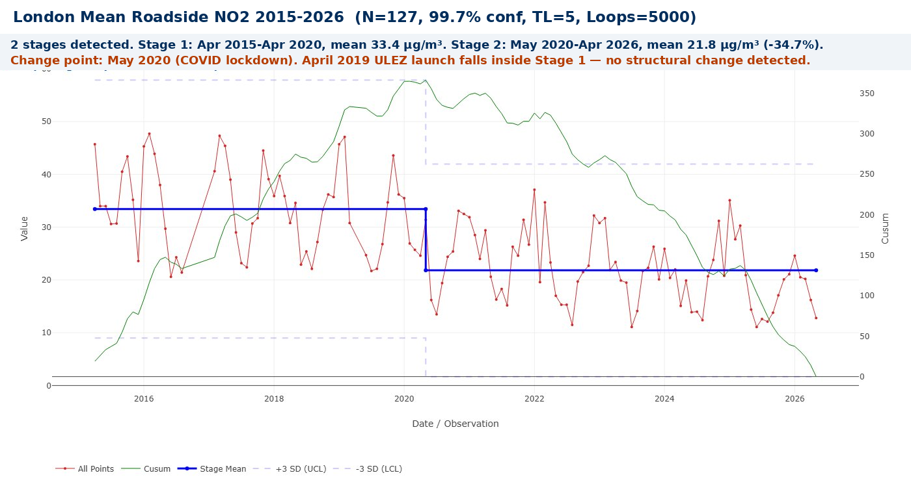

ULEZ or COVID?
Bootstrap CUSUM applied to 10 years of London NO2 monitoring data finds one structural change point in roadside air quality: May 2020. Not April 2019. The data is unambiguous — and what it tells us about ULEZ is more nuanced than either side of the political debate admits.
The most contested policy in recent London history
Few policies have generated as much political heat as the Ultra Low Emission Zone. Supporters cite dramatic reductions in roadside nitrogen dioxide, falling rates of respiratory disease, and a 58% reduction in non-compliant vehicles detected on London roads. Critics argue it unfairly targets lower-income drivers with older vehicles, that the economic impact on outer London businesses is severe, and that the air quality improvements were already happening before the scheme launched.
Both sides produce data. Both sides produce models. Neither side has asked the most important question in a rigorous way: when did London’s roadside air quality actually, structurally change — and is that date consistent with ULEZ causing it?
Bootstrap CUSUM is designed to answer exactly that question. It applies a model-free, assumption-free statistical algorithm directly to the measured NO2 data and identifies structural change points with a confidence level and a date. It does not model counterfactuals. It does not estimate what would have happened without ULEZ. It reports what the data actually shows — and when.
🕑 Key dates in the ULEZ story
What Bootstrap CUSUM brings to the debate
The ULEZ debate has been conducted almost entirely in the language of counterfactual modelling — estimates of what NO2 levels would have been without the scheme, compared to what they actually are. The GLA’s one-year report estimates that in 2024, roadside NO2 is 27% lower across London than it would have been without ULEZ and its expansions. These are carefully produced estimates using peer-reviewed methodology — but they are estimates of a hypothetical, not measurements of reality.
Bootstrap CUSUM offers something different and complementary: a direct interrogation of the measured data itself. It asks: at what point did London roadside NO2 move to a structurally different level, and is that change statistically distinguishable from the normal month-to-month variation of the data? No counterfactual modelling. No assumption about what would have happened. Just the measured data, a statistical algorithm, and a date.
📈 What Bootstrap CUSUM can and cannot tell us
It can tell you: when the NO2 data structurally changed, by how much, and with what confidence. The change point is dated to within a month. The confidence level tells you how certain the evidence is that this is a genuine structural shift rather than normal variation.
It cannot tell you: why the change occurred. A change point coinciding with a ULEZ expansion date would be consistent with ULEZ causing it — but other factors (COVID, fleet turnover, working from home, bus electrification) may have contributed or dominated. What it can say with precision is whether any given intervention produced a change large enough and sustained enough to be statistically distinguishable from the noise of the system.
Why this matters for the debate: both sides of the ULEZ argument are currently fighting over models. Bootstrap CUSUM bypasses the models entirely and goes directly to the data. If the data shows a change point in April 2019, that is consistent with ULEZ causing the improvement. If it shows a change point in May 2020, the data is pointing at COVID. If neither 2019 nor 2020 produces a change point, the improvement has been gradual and continuous — consistent with long-term fleet turnover rather than any discrete policy intervention.
The data: London mean roadside NO2, 2015–2026
The data used in this analysis is the London mean roadside nitrogen dioxide monthly average from the Defra Automatic Urban and Rural Network (AURN) Automatic London Network — the average of automatic monitoring stations across London measuring roadside NO2 continuously. Monthly averages from April 2015 to April 2026 give 127 observations. Settings: 95% confidence, Turn Length 5, Loops 5000.
📊 Reproducing this analysis: Download the London Average Air Quality CSV from data.london.gov.uk. Open in Excel, keep the Month column and “London Mean Roadside:Nitrogen Dioxide (ug/m3)” column, convert dates to YYYY-MM format, save as CSV, upload to StepChangeAnalysis.com with Y = NO2 column. The analysis in this article reproduces exactly.
| File | Description | Rows | Download |
|---|---|---|---|
ulez-no2-monthly.csv |
London Mean Roadside NO2 monthly averages, Apr 2015–Apr 2026, ready to upload | 127 | ⇣ Download |

The finding: one change point, May 2020, 100% confidence
The April 2019 ULEZ launch falls inside Stage 1 — the period of no structural change. The October 2021 inner London expansion and the August 2023 London-wide expansion both fall inside Stage 2 — after the structural change had already occurred. Neither the initial ULEZ launch nor either subsequent expansion appears as a detectable change point in the London-wide roadside NO2 data.
| Stage | Period | Mean NO2 (µg/m³) | Change | Confidence | Key events during stage |
|---|---|---|---|---|---|
| 1 | Apr 2015–Apr 2020 | 33.43 | Baseline | Baseline | T-charge introduced Oct 2017. ULEZ launched Apr 2019. No structural change detected at either date. |
| 2 | May 2020–Apr 2026 | 21.82 | −34.7% | 100% | COVID lockdown begins Mar 2020. Inner London ULEZ expansion Oct 2021. London-wide expansion Aug 2023. All fall within Stage 2 — after the structural change. |
The WHO annual mean guideline for NO2 is 10 µg/m³. The UK legal limit is 40 µg/m³. Stage 1 mean of 33.43 µg/m³ was below the legal limit but well above the WHO guideline. Stage 2 mean of 21.82 µg/m³ remains above the WHO guideline but represents a substantial improvement. The improvement is real, large, and statistically certain. The question is what caused it.
COVID as the structural trigger — but not the whole story
The change point of May 2020 coincides precisely with the first COVID-19 national lockdown. Traffic fell to record lows across London in April–May 2020 — some estimates suggest 60–70% reductions in vehicle movements at peak lockdown. NO2, which is produced primarily by vehicle combustion, fell correspondingly. This is not surprising and is not contested by anyone.
It is worth pausing on what that change point represents. The largest single structural improvement in London air quality since records began was a byproduct of a global catastrophe that killed hundreds of thousands in the UK alone and caused economic damage on a scale not seen since the Second World War. The fact that cleaner air required a crisis to produce — rather than a decade of policy — is itself a comment on how difficult structural change is to achieve through normal means. The data shows the benefit. The cost was incalculable.
What is significant — and what the Bootstrap CUSUM reveals with clarity — is that the lower NO2 level held after traffic returned. By mid-2021 London traffic volumes had broadly recovered to pre-pandemic levels. NO2 did not. Stage 2 mean (21.82 µg/m³) from May 2020 through to April 2026 is structurally and consistently lower than Stage 1, even as the city returned to normal activity. This is the genuinely interesting finding, and it demands explanation.
Why did the improvement hold?
Several structural changes occurred simultaneously during and after COVID that collectively explain why lower NO2 levels were maintained after traffic recovered:
- Fleet turnover accelerated. The pandemic coincided with a wave of vehicle renewal — partly driven by ULEZ compliance pressure that had been building since 2019, partly by the normal replacement cycle accelerating as people changed their transport habits. Vehicles purchased in 2020–2022 were substantially cleaner than those they replaced. Once cleaner vehicles replace older ones, the older emissions don’t come back.
- Working from home became structural, not temporary. A significant proportion of London office workers never returned to five-day commuting. Hybrid working reduced peak-hour vehicle movements permanently — not because of any policy intervention, but because employers and employees discovered that full-time office attendance was not necessary. Fewer peak-hour vehicles means lower peak-hour NO2, and the rush-hour contribution to annual mean is substantial.
- Bus fleet electrification continued through and after COVID. TfL’s programme of replacing diesel buses with electric and hybrid vehicles continued regardless of the pandemic. Buses are among the highest NO2 emitters per vehicle in urban environments. Each diesel bus replaced is a permanent, not temporary, reduction.
- ULEZ compliance pressure maintained fleet standards. Even though the ULEZ launch in 2019 did not produce a detectable structural change in city-wide NO2 at that time, it created a continuing incentive for the vehicle fleet to upgrade. By 2021–2023, compliance rates in the expanded ULEZ zones were high — meaning the vehicles still on London roads were, on average, significantly cleaner than the pre-ULEZ fleet.
The honest interpretation of the Bootstrap CUSUM result is therefore not “ULEZ had no effect.” It is more precise: ULEZ did not produce a structural change large enough to be detected in city-wide NO2 data at its launch date. COVID produced the detectable structural break. But the improvement held because of a combination of factors — of which ULEZ compliance pressure was one — that collectively prevented NO2 from rebounding when traffic returned.
The long-term trend: what was already happening
Looking at the green CUSUM line in Stage 1, it is rising continuously from 2015 to 2019 — meaning NO2 was consistently above its overall mean throughout that period. There is no visible kink or slope change at April 2019. The CUSUM does not begin to fall until 2020. This is consistent with the Imperial College London finding that changes in NO2 around the initial ULEZ introduction in 2019 were less than 3% overall and statistically insignificant — small relative to the 6% per year long-term improvement already underway from other causes.
London’s NO2 has been falling for decades — driven by Euro emissions standards tightening with each vehicle generation, cleaner fuels, catalytic converter improvements, and successive low emission zones dating back to 2008. Between 2016 and 2020, the number of Londoners living in areas with illegally high NO2 fell by 94%. Most of that improvement predates April 2019. Bootstrap CUSUM confirms this: the data was still in Stage 1 — structurally unchanged — a full year after ULEZ launched.
What this means for the political debate
The GLA and TfL are correct that London’s air quality has dramatically improved and that ULEZ has contributed to that improvement. The Bootstrap CUSUM does not contradict this. What it adds is precision about timing and causation that the counterfactual modelling approach cannot provide.
The critics who argue that “COVID did it, not ULEZ” are correct about the timing of the structural change point — but incorrect if they conclude that ULEZ therefore had no role. ULEZ created the compliance pressure that prevented the fleet from reverting to older, more polluting vehicles. The maintenance of lower NO2 levels after traffic recovered is partly a ULEZ effect, even if the initial structural break was COVID-driven.
📈 The honest summary
What Bootstrap CUSUM shows: One structural change in London roadside NO2 since 2015. Dated to May 2020. Confidence 100%. The April 2019 ULEZ launch, the October 2021 expansion, and the August 2023 London-wide expansion do not appear as detectable structural change points in the city-wide data.
What this means: COVID was the trigger for the structural break. The improvement held because of a combination of fleet turnover, permanent working-from-home behaviour change, bus electrification, and ULEZ compliance pressure. ULEZ was a necessary component of the sustained improvement — but it was not the discrete structural cause the GLA implies in its counterfactual modelling.
What the debate should focus on: Not “did ULEZ work?” but “what combination of factors produced the sustained improvement — and which of those factors is most scalable, most cost-effective, and most equitable?” Bootstrap CUSUM has found the structural change and dated it. The policy question is what caused it to hold.
What this means for other cities
London is the most cited example of a large-scale urban ULEZ. Cities around the world — from Paris to Seoul to New York — are considering similar schemes. The Bootstrap CUSUM finding has a direct implication for how those cities should design and evaluate their own programmes.
A ULEZ alone, applied to a subset of the city, does not appear to produce a detectable city-wide structural change in NO2 at launch. What produces structural change — at least in the London data — is a combination of demand shock (COVID reduced traffic dramatically), compliance-driven fleet turnover (ULEZ created the incentive), behaviour change (working from home reduced commuting permanently), and infrastructure investment (bus electrification, EV charging). Any city expecting a clean before/after signal from a ULEZ launch should recalibrate that expectation. The signal, if it comes, will be gradual, multi-causal, and may only become statistically detectable years after the scheme launches.
This is not an argument against ULEZ. It is an argument for evaluating it honestly, with tools that can distinguish a genuine structural change from common cause variation — and for setting realistic expectations about what a single policy instrument can deliver in a complex urban air quality system.
Reproduce this analysis on your own data
The London air quality CSV is freely available from the London Datastore. Upload to StepChangeAnalysis.com and run the Bootstrap CUSUM yourself. Free, browser-based, no data leaves your computer.
📊 Open the Free Tool📊 Data note: London Mean Roadside Nitrogen Dioxide monthly averages, Defra AURN Automatic London Network, April 2015–April 2026, N=127. Source: London Datastore. Some months have missing data due to monitoring site maintenance. Bootstrap CUSUM is robust to missing values in the date series provided the gaps are not systematic.